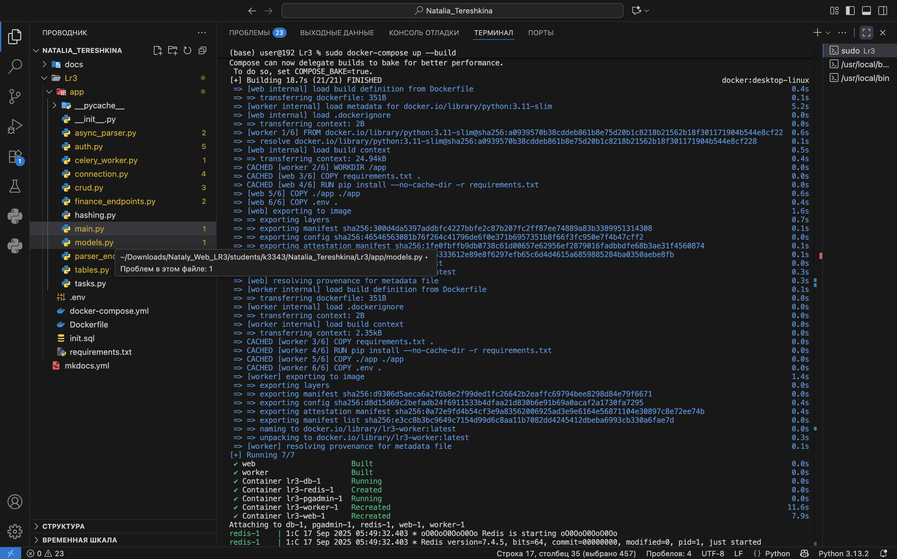
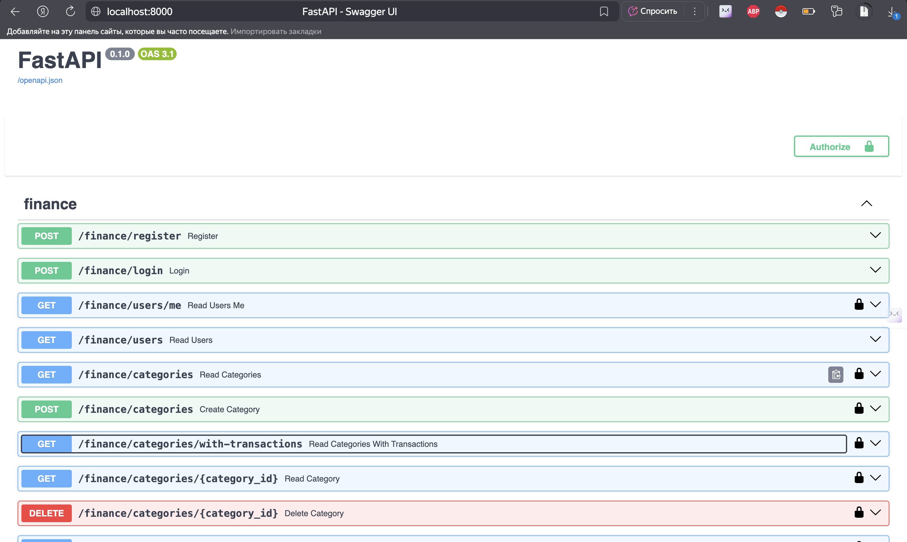
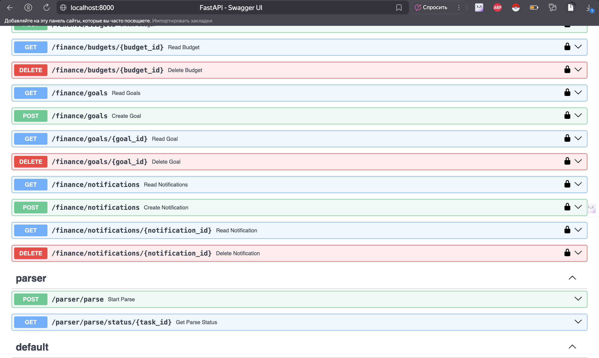
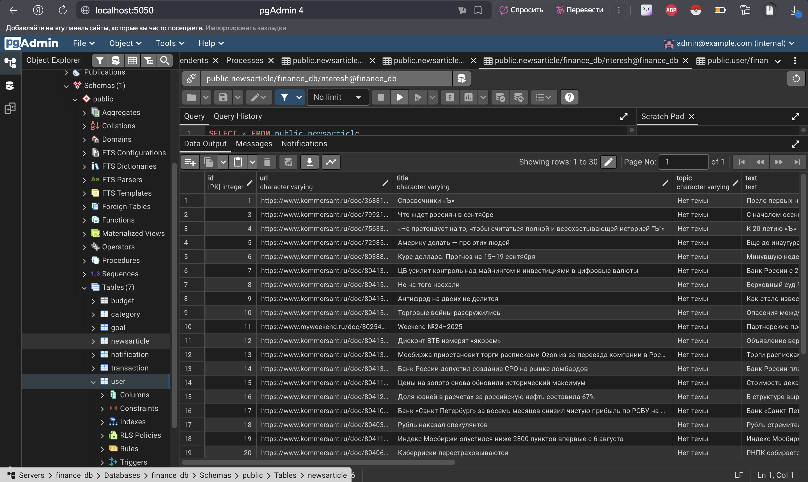
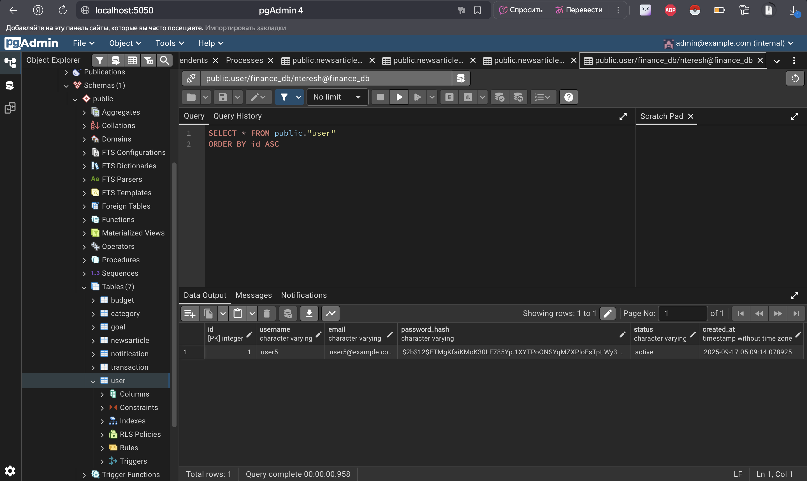
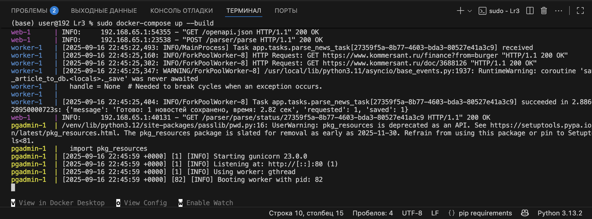
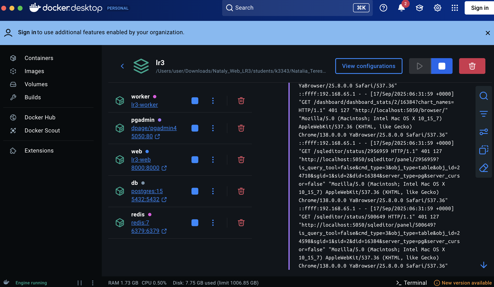

Отчет по Лабораторной работе №3. ПУпаковка FastAPI приложения в Docker, Работа с источниками данных и Очереди.
Цель
В рамках данного задания нужно было взять FastAPI приложение (создано в рамках лабораторной работы номер 1), базу данных (аналогично создано в рамках лабораторной работы номер 1) и парсер данных (создано в рамках лабораторной работы номер 2)
Docker файл и docker-compose.yml:
FROM python:3.11-slim
WORKDIR /app
COPY requirements.txt .
RUN pip install --no-cache-dir -r requirements.txt
COPY ./app ./app
COPY .env .
EXPOSE 8000
CMD ["uvicorn", "app.main:app", "--host", "0.0.0.0", "--port", "8000"]
version: "3.9"
services:
db:
image: postgres:15
restart: always
environment:
POSTGRES_USER: ${POSTGRES_USER}
POSTGRES_PASSWORD: ${POSTGRES_PASSWORD}
POSTGRES_DB: ${POSTGRES_DB}
ports:
- "5432:5432"
volumes:
- postgres_data:/var/lib/postgresql/data
- ./init.sql:/docker-entrypoint-initdb.d/init.sql
pgadmin:
image: dpage/pgadmin4
restart: always
environment:
PGADMIN_DEFAULT_EMAIL: ${PGADMIN_EMAIL}
PGADMIN_DEFAULT_PASSWORD: ${PGADMIN_PASSWORD}
ports:
- "5050:80"
depends_on:
- db
volumes:
- pgadmin_data:/var/lib/pgadmin
web:
build: .
restart: always
depends_on:
- db
- redis
ports:
- "8000:8000"
env_file:
- .env
environment:
DB_URL: ${DB_URL}
SECRET_KEY: ${SECRET_KEY}
ALGORITHM: ${ALGORITHM}
command: uvicorn app.main:app --host 0.0.0.0 --port 8000
redis:
image: redis:7
ports:
- "6379:6379"
worker:
build: .
command: celery -A app.celery_worker.celery_app worker --loglevel=info -Q parser
depends_on:
- redis
- web
volumes:
- .:/app
env_file:
- .env
volumes:
postgres_data:
pgadmin_data:
CREATE USER nteresh WITH PASSWORD 'password';
CREATE DATABASE finance_db OWNER nteresh;
GRANT ALL PRIVILEGES ON DATABASE finance_db TO nteresh;
Прокидываем 5 контейнеров: для запуска бд, для инициализации pgadmin, для запуска приложения на FastAPI, для рабочих и для reddis. Далее реулизуем возможность вызова парсера по http. Для этого прокинем дополнительный эндпоинт, а финансовую часть отделяем от main.py
Ендпоинты:
router = APIRouter()
class ParseRequest(BaseModel):
count: int = Field(ge=1, le=200, description="Сбор новостей")
@router.post("/parse")
def start_parse(req: ParseRequest):
try:
task = parse_news_task.delay(req.count)
return {"message": "Parsing started", "task_id": task.id}
except Exception as e:
raise HTTPException(status_code=500, detail=str(e))
@router.get("/parse/status/{task_id}")
def get_parse_status(task_id: str):
try:
task = parse_news_task.AsyncResult(task_id)
return {"task_id": task_id, "status": task.status, "result": task.result}
except Exception as e:
raise HTTPException(status_code=500, detail=str(e))
router = APIRouter()
@router.post("/register", response_model=UserRead)
def register(user: UserCreate, session: Session = Depends(get_session)):
return create_user(session, user)
@router.post("/login", response_model=LoginResponse)
def login(login_data: LoginRequest, session: Session = Depends(get_session)):
user = get_user_by_credential(session, login_data.username)
if not user or not verify_password(login_data.password, user.password_hash):
raise HTTPException(
status_code=status.HTTP_401_UNAUTHORIZED,
detail="Неверное имя пользователя или пароль",
)
token = encode_token(user.id)
return {
"access_token": token,
"token_type": "bearer",
"user": user
}
...
Объединяем все апи в main.py
from fastapi import FastAPI
from app.connection import init_db
from app.finance_endpoints import router as finance_router
from app.parser_endpoint import router as parser_router
app = FastAPI()
@app.on_event("startup")
def on_startup():
init_db()
app.include_router(finance_router, prefix="/finance", tags=["finance"])
app.include_router(parser_router, prefix="/parser", tags=["parser"])
Результат:



Посмотрим, что происходит на стороне бд:


А теперь подключим Celery + Redis в стек:
from celery import Celery
celery_app = Celery(
"worker",
broker="redis://redis:6379/0",
backend="redis://redis:6379/0",
include=["app.tasks"],
)
celery_app.conf.task_routes = {
"app.tasks.*": {"queue": "parser"},
}
celery_app.conf.task_serializer = "json"
celery_app.conf.accept_content = ["json"]
celery_app.conf.result_serializer = "json"
celery_app.conf.timezone = "UTC"
и подключим задачи
import asyncio
from app.celery_worker import celery_app
from app.async_parser import parse_news
@celery_app.task(name="app.tasks.parse_news_task")
def parse_news_task(count: int):
try:
try:
loop = asyncio.get_event_loop()
if loop.is_running():
fut = asyncio.ensure_future(parse_news(count))
loop.run_until_complete(fut)
return fut.result()
else:
return loop.run_until_complete(parse_news(count))
except RuntimeError:
return asyncio.run(parse_news(count))
except Exception as e:
return {"error": str(e)}
Посмотрим на результат подключения Celery + Redis:

Посмотрим на контейнер:

Вывод
В ходе лабораторной работы было реализовано контейнеризованное FastAPI-приложение с подключением к базе данных, PgAdmin и парсером. Также успешно интегрированы Celery и Redis для асинхронной обработки задач через очередь.